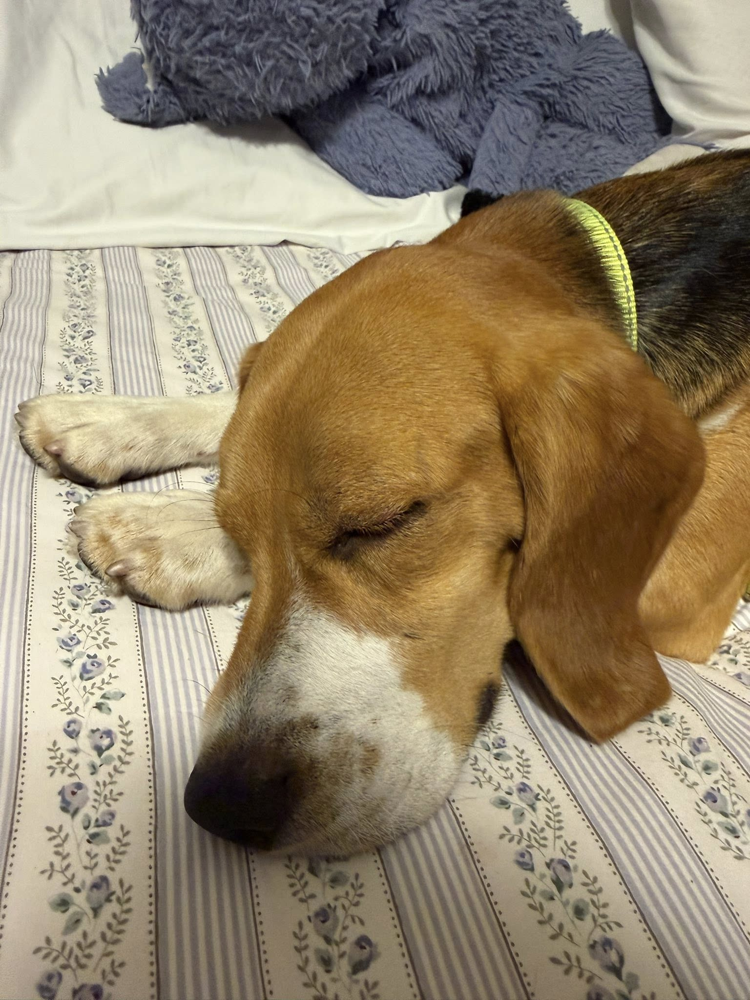

Omelette almost didn’t make it home.
Omelette was born into a cage — one of hundreds of beagles bred for research at Ridglan Farms in Wisconsin, a life of concrete and fluorescent light with no grass, no sky, and no family of his own. This spring, after years of advocacy, he was finally freed and brought to Florida, where a family in Boynton Beach opened their door to him. For the first time, he felt sun on his face and grass beneath his paws. He was finally safe. He was finally home. Then, on a quiet Sunday evening, he slipped through a gap in the fence and was gone.
Omelette was wearing a GPS collar. His adopter had been given it, along with instructions to turn it on — but the app hadn’t been set up yet. The phone needed a little more storage, and it could wait until later. So when Omelette disappeared, the collar around his neck couldn’t tell anyone where he was.[1]
What followed were some of the hardest days our community has ever lived through. Volunteers searched around the clock. Then a dog was found in a nearby canal, lost to an alligator. The coloring matched. We mourned him and said goodbye. And then — days later — Omelette was spotted alive, trotting across a road, frightened but whole. The dog in the canal had been someone else’s beloved companion. Today Omelette is in a foster home, finally learning how to simply be a dog.
We are overjoyed that Omelette survived. We are also clear-eyed about why he did: luck. The collar that could have located him in minutes was never switched on. He came home in spite of that — not because of anything that went right — and another dog, someone’s whole heart, did not come home at all. A GPS collar in a drawer, or unactivated on a dog’s neck, saves no one. That is why we are asking every rescue, shelter, foster, and adopter of a dog from a research laboratory, breeding facility, or other traumatic setting to sign Omelette’s Promise. After years of advocacy, Ridglan Farms is now shutting down — its last roughly 500 beagles are being transferred to Big Dog Ranch Rescue, and the facility surrenders its breeding license this summer. But we keep fighting for the 15,000 or more dogs at Marshall BioResources and every dog still trapped in labs and contract research organizations across the country.
